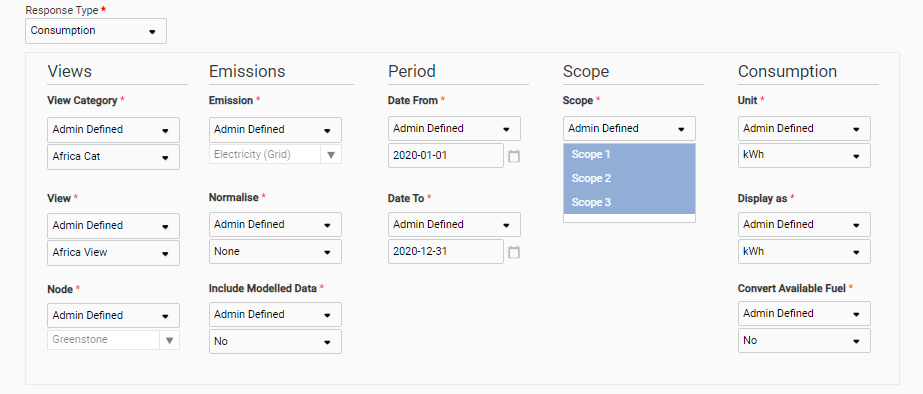
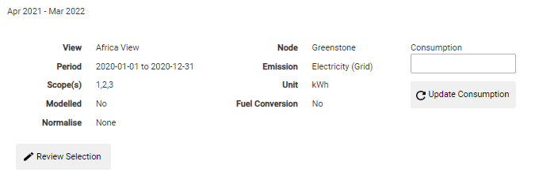
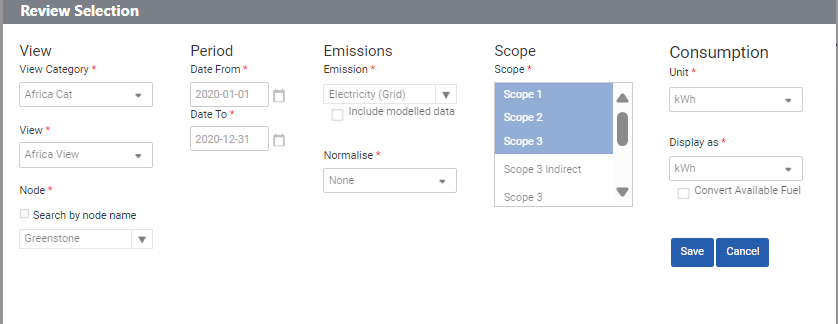

GSE-427: You can now pull both consumption and emissions data from the Environment module into the Frameworks module.
This is achieved using two new Consumption and Emissions question types.
Questions of the two new types can be created in the custom question library or by import.
When creating consumption and emissions questions, the Administrator can decide from where to pull environment data into the Frameworks module. They can do this using the same fields available in the Analysis dashboard of the Environment module. The Administrator can define the field (Admin-defined), enable the input user to select the field (User-Input) or have data pulled from the time and node to which the question is assigned (Assigned Period / Assigned Node).

The questions can then be added to questionnaires.
Note: Consumption and Emissions questions cannot currently be imported in bulk. That functionality will be added in a future release.
Once created, the questions will have:
A Review Selection button, which provides a dialog box that has fields for populating changes. Input users can only define the fields for which the Administrator has given them access. Admin-defined fields will be pre-selected and cannot be changed. Before saving, the Cancel button will revert all changes. The Save button will save the changes.
An ‘Update Consumption’ / ‘Update Emissions’ button that will trigger the data collection from the Environment module after the changes have been made. The data is then updated in the Response field within the Frameworks module.


Otherwise, the two new question types function in same way as all other questions, including exporting from the Custom Questions Library and from the Frameworks module. Also, the two new question types are supported within Table style questions through the use of ‘Consumption’ and ‘Emissions’ columns.